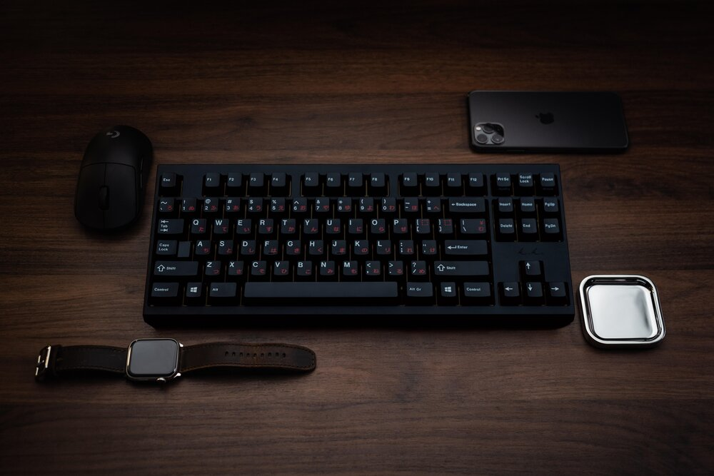
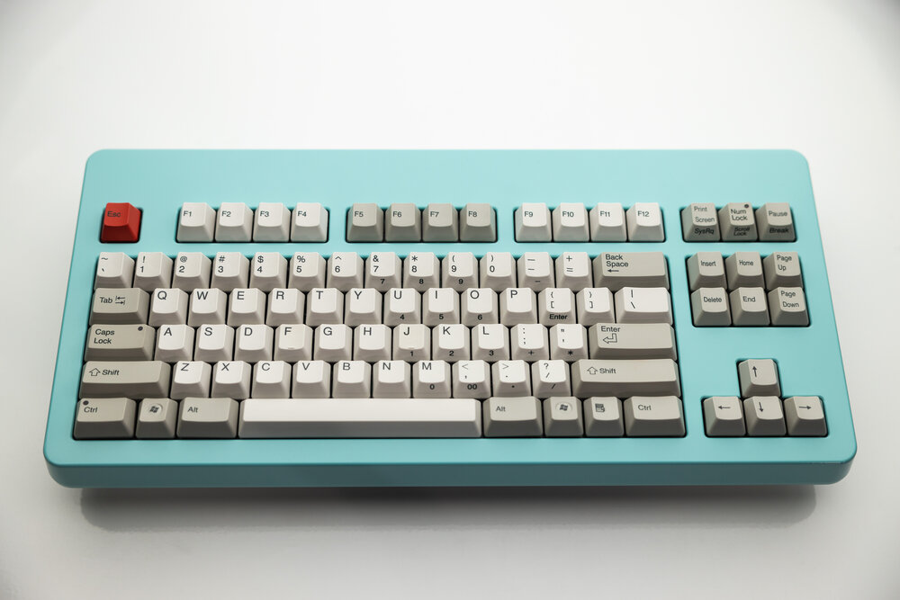
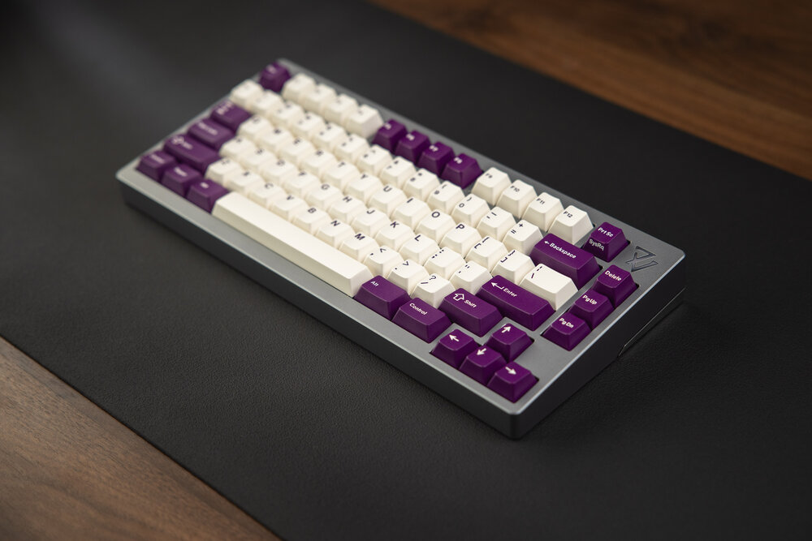
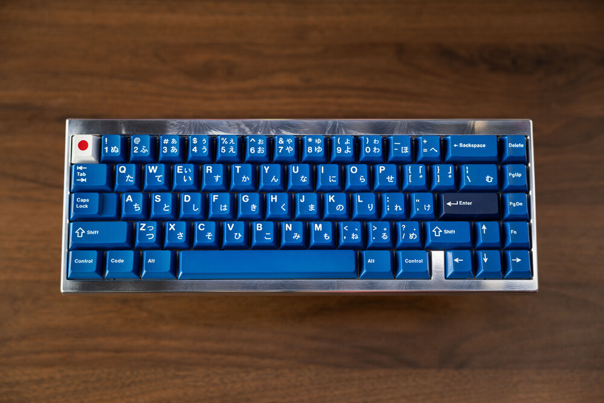
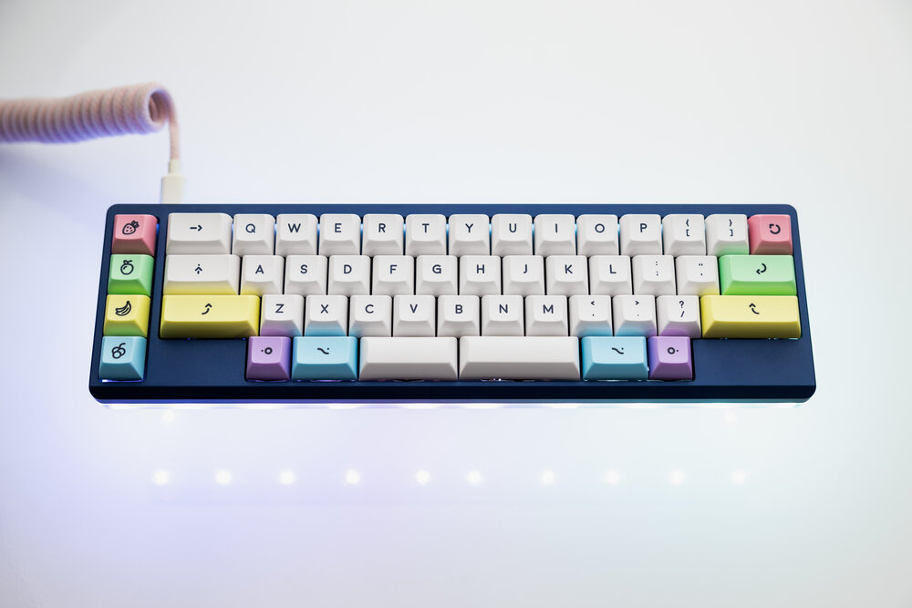
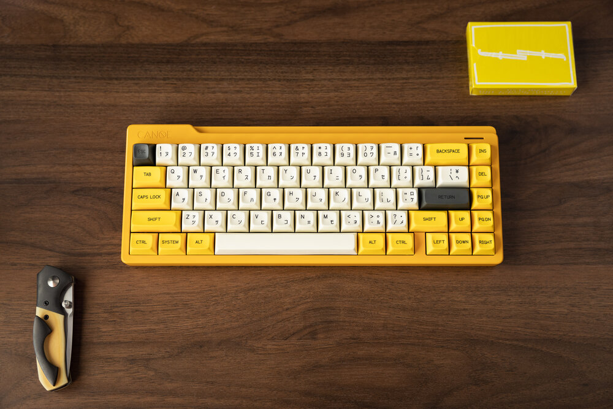
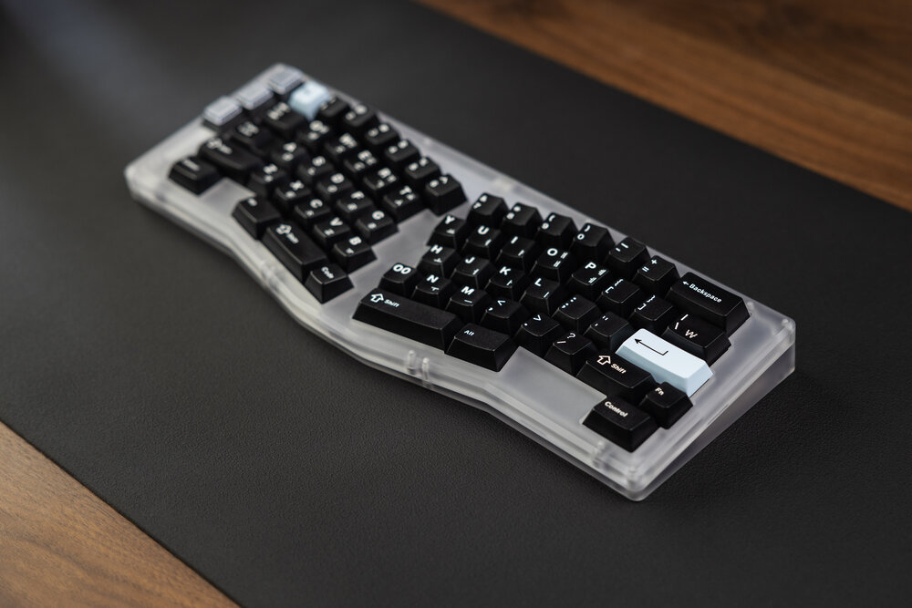
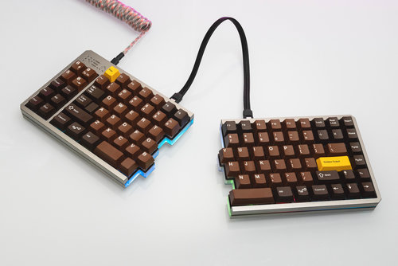
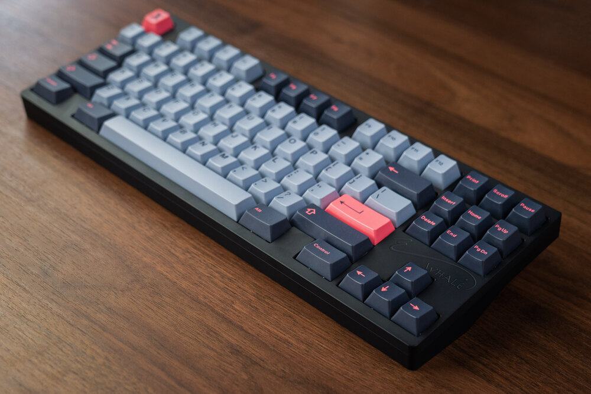

Welcome
Hello! My name is Kieran. Welcome to my custom mechanical keyboard website. A 101 for everything to do with modifying your keyboard for enthusiasts and typists alike. This is to introduce people wanting to dive into such a niche area. I won't be too in-depth but hopefully I can give a general sense of what to look out for in the rabbit hole of mechanical keyboards. However a bit of a disclaimer, my experience with modifying is actually quite limited with only one modified keyboard to my name so don't take some info as literal. I'm by no means an expert so feel free to further research with the wide range of information out there. Below is a brief look at just some of the custom keyboards available out there.
|  |  |  |
|  |  |  |
|  |  |  |